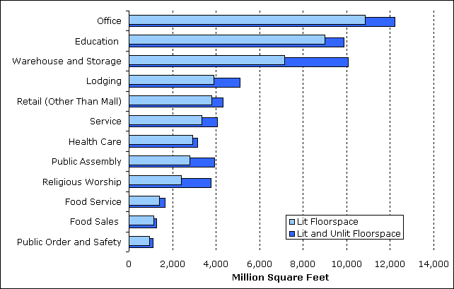
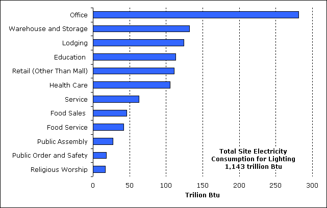
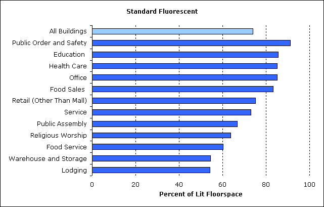
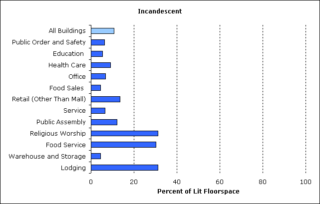
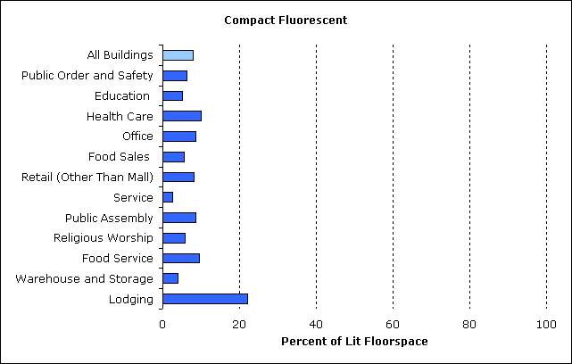
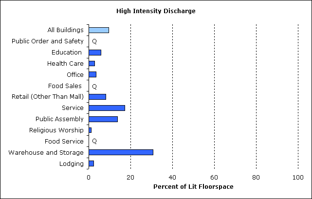
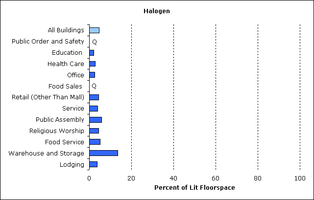

Lighting and Principal Building Activity
More floorspace is lit in office buildings than any other commercial building type (more than 10 billion square feet or 21 percent of total lit floorspace) (Figure 5 and Table 2). Three building types—office, education, and warehouse and storage buildings—account for 53 percent of total lit floorspace and 50 percent of total (lit and unlit) floorspace.
The amount of lit floorspace generally tracks the amount of lit and unlit floorspace compared by building activity (Figure 5). The two exceptions are education and health care buildings. Both rank higher in amount of lit floorspace because a larger percentage of their total floorspace is lit. The percentage of lit floorspace for all buildings is 79 percent while it is 91 percent for education buildings and 93 percent for health care buildings.
Figure 5. Office, education, and warehouse and storage buildings account for more than half of total lit floorspace in commercial buildings.
Note: Data are for non-mall buildings.
Source: Energy Information Administration, 2003 Commercial Buildings Energy Consumption Survey.
Table 2. Total floorspace and lit floorspace by lighting type and principal building activity
| Total
Lit and Unlit Area (million square feet) |
Total Lit Area (million square feet) |
Floorspace Lit by Each Type of Light (million square feet) |
|||||
|---|---|---|---|---|---|---|---|
| Standard Fluorescent |
Incandescent | Compact Fluorescent |
High |
Halogen | |||
| All Buildings | 64,783 | 51,342 | 37,918 | 5,556 | 4,004 | 4,950 | 2,403 |
| Principal Building Activity | |||||||
| —Education | 9,874 | 8,983 | 7,692 | 489 | 461 | 520 | 191 |
| —Food Sales | 1,255 | 1,129 | 941 | 51 | 64 | Q | Q |
| —Food Service | 1,654 | 1,391 | 837 | 421 | 134 | Q | 72 |
| —Health Care | 3,163 | 2,937 | 2,501 | 267 | 294 | 85 | 83 |
| —Lodging | 5,096 | 3,901 | 2,112 | 1,215 | 864 | 88 | 142 |
| —Retail (Other than Mall) | 4,317 | 3,795 | 2,852 | 515 | 305 | 310 | 168 |
| —Office | 12,208 | 10,846 | 9,231 | 730 | 942 | 382 | 268 |
| —Public Assembly | 3,939 | 2,807 | 1,876 | 339 | 241 | 386 | 166 |
| —Public Order and Safety | 1,090 | 940 | 856 | 58 | 58 | Q | Q |
| —Religious Worship | 3,754 | 2,419 | 1,543 | 755 | 139 | 28 | 105 |
| —Service | 4,050 | 3,348 | 2,445 | 221 | 84 | 580 | 136 |
| —Warehouse and Storage | 10,078 | 7,136 | 3,878 | 309 | 277 | 2,184 | 955 |
| —Other | 1,738 | 1,582 | 1,058 | 159 | 138 | 241 | 52 |
| —Vacant | 2,567 | 129 | 95 | Q | Q | Q | Q |
| Q=Data withheld because the Relative Standard Error (RSE) was greater than 50 percent, or fewer than 20 buildings were sampled. Note: Data are for non-mall buildings. Source: Energy Information Administration, 2003 Commercial Buildings Energy Consumption Survey. |
|||||||
The total amount of electricity consumed for lighting varies significantly across building types (Figure 6). The amount consumed by office buildings greatly exceeds the amount consumed by any other type of building. Office buildings have more lit floorspace than any building type and they consume more electricity for all end uses.
Figure 6. Office buildings consume more than twice as much site electricity for lighting as any building type.
Note: Data are for non-mall buildings. Site electricity excludes energy used to generate and transmit electricity.
Source: Energy Information Administration, 2003 Commercial Buildings Energy Consumption Survey, Table E3.
Standard Fluorescent Lamps
The following 5 graphs (Figures 7-11) show percent of floorspace lit by each of the major lighting types for the principal building activities (the order of the activities is the same for all 5 graphs).
Standard fluorescent lamps illuminate the most floorspace for all major types of commercial buildings. These lamps provide ambient lighting as well as task lighting in buildings.
- Standard fluorescent lamps illuminate a total of 74 percent of lit commercial floorspace (Figure 7).
- For each of the major building types, at least half of lit floorspace is lit by fluorescent lamps.
- For the first 5 building types, fluorescent lamps illuminate more than 80 percent of the floorspace.
Figure 7. Standard fluorescent lighting, by far, illuminates the greatest amount of floorspace in commercial buildings.
Note: Data are for non-mall buildings.
Source: Energy Information Administration, 2003 Commercial Buildings Energy Consumption Survey.
Incandescent Lamps
- Three types of buildings—religious worship, food service, and lodging—have significantly greater space illuminated by incandescent lamps (more than 30 percent of lit floorspace for each).
- Only two other building types, retail (other than mall) and public assembly, exceed 11 percent, the average for all buildings (Figure 8).
Figure 8. Incandescent lamps illuminate the second most amount of floorspace.
Note: Data are for non-mall buildings.
Source: Energy Information Administration, 2003 Commercial Buildings Energy Consumption Survey.
Compact Fluorescent Lamps
- In lodging buildings, compact fluorescent lamps illuminate 22 percent of floorspace, more than twice as much as any other building type (Figure 9).
- All other building types use these lamps to light 10 percent or less of floorspace.
Figure 9. Compact fluorescent lamps illuminate just a small portion of floorspace in most building types.
Note: Data are for non-mall buildings.
Source: Energy Information Administration, 2003 Commercial Buildings Energy Consumption Survey.
High Intensity Discharge Lamps
- The building types that use the greatest percentage of high intensity discharge (HID) lamps include buildings with open, high-ceiling spaces (Figure 10).
- HID lamps are used the most in warehouse and storage buildings, where they illuminate nearly one-third (31 percent) of lit floorspace.
- Service buildings, which include vehicle storage, and vehicle service and repair buildings, have 17 percent of their floorspace lit by HID lamps.
- Public assembly buildings, which include sports arenas and theaters, have 14 percent of their floorspace illuminated by HID lamps.
Figure 10. High intensity discharge (HID) lamps are primarily used to illuminate open, high ceiling areas.
Q=Data withheld because the Relative Standard Error (RSE) was greater than 50 percent, or fewer than 20 buildings were sampled.
Note: Data are for non-mall buildings.
Source: Energy Information Administration, 2003 Commercial Buildings Energy Consumption Survey.
Halogen Lamps
- Halogen lamps are a type of incandescent lamp that also have superior light quality and color rendition characteristics.
- The use of halogen lamps in commercial buildings is fairly limited. Their greatest use is in warehouse and storage buildings, where they illuminate 13 percent of the floorspace (Figure 11).
- In all other types, halogen lamps illuminate 6 or less percent of floorspace.
Figure 11. Halogen lamps are used for just a fraction of floorspace in buildings.
Q=Data withheld because the Relative Standard Error (RSE) was greater than 50 percent, or fewer than 20 buildings were sampled.
Note: Data are for non-mall buildings.
Source: Energy Information Administration, 2003 Commercial Buildings Energy Consumption Survey.
Lighting in Commercial Buildings
Introduction
Lighting and Principal Building Activity
Lighting and Building Size and Year Constructed
Changes in Lighting
Detailed lighting tables |
HTML |
Excel |
PDF |
|---|---|---|---|
| Table L1. Floorspace Lit by Lighting Type (Non-Mall Buildings), 1995 | |||
| Table L2. Floorspace Lit by Lighting Type (Non-Mall Buildings), 1999 | |||
| Table L3. Floorspace Lit by Lighting Type (Non-Mall Buildings), 2003 | |||
| Note: Excel version includes tab for relative standard errors (RSEs). |
Return to: CBECS Home Page
Specific questions may be directed to:
Alan Swenson
Alan Swenson
Date released: April, 2009